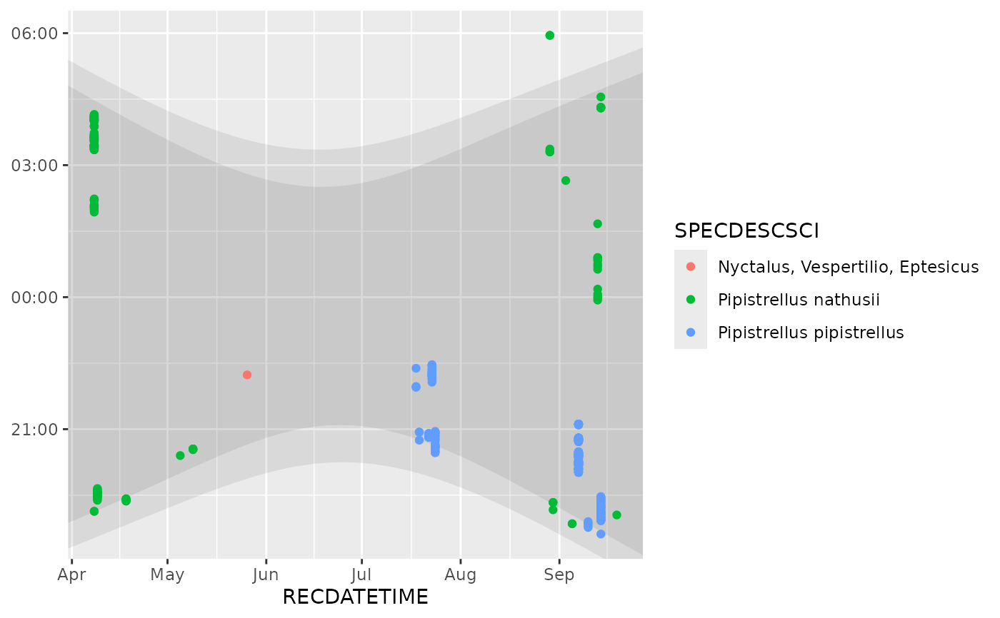

Annotate ggplot with a band indicating solar events
annotate_daylight.RdAnnotate a ggplot (currently only plots using coord_hourglass()
is supported) with a coloured band indicating solar events, such
as sunset and sunrise.
Usage
AnnotateDaylight
annotate_daylight(
longitude = 0,
latitude = 60,
sun_prop = c("sunrise", "sunset"),
...
)Format
An object of class AnnotateDaylight (inherits from GeomPolygon, Geom, ggproto, gg) of length 6.
Arguments
- longitude, latitude
Geographical location that will be used to calculate sunlight times.
- sun_prop
A vector of two solar events that should be captured by the annotation. It will be shown as a coloured band between these two events. Default is
c("sunrise", "sunset"), but could also bec("dusk", "dawn"). Seesuncalc::getSunlightTimes()for all allowed solar events.- ...
Passed to the list of layer parameters.
Value
Returns a ggplot2::layer() which can be added to a ggplot2::ggplot()
Examples
library(ggplot2)
data(bats)
monitoring <- attr(bats, "monitoring")
ggplot(subset(bats, format(RECDATETIME, "%Y") == "2018"),
aes(x = RECDATETIME, col = SPECDESCSCI)) +
annotate_daylight(monitoring$longitude[1], monitoring$latitude[1]) +
annotate_daylight(monitoring$longitude[1], monitoring$latitude[1], c("dusk", "dawn")) +
geom_hourglass()
